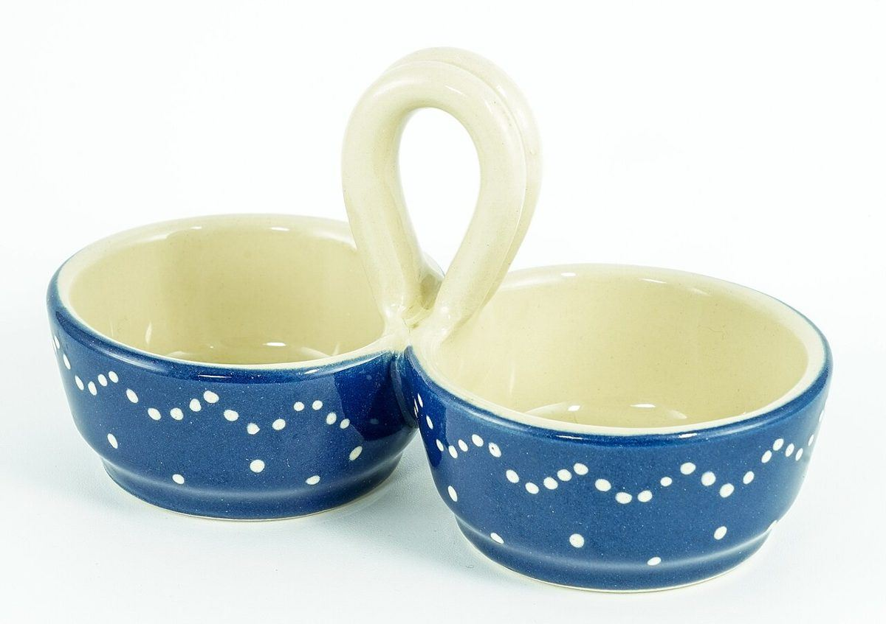
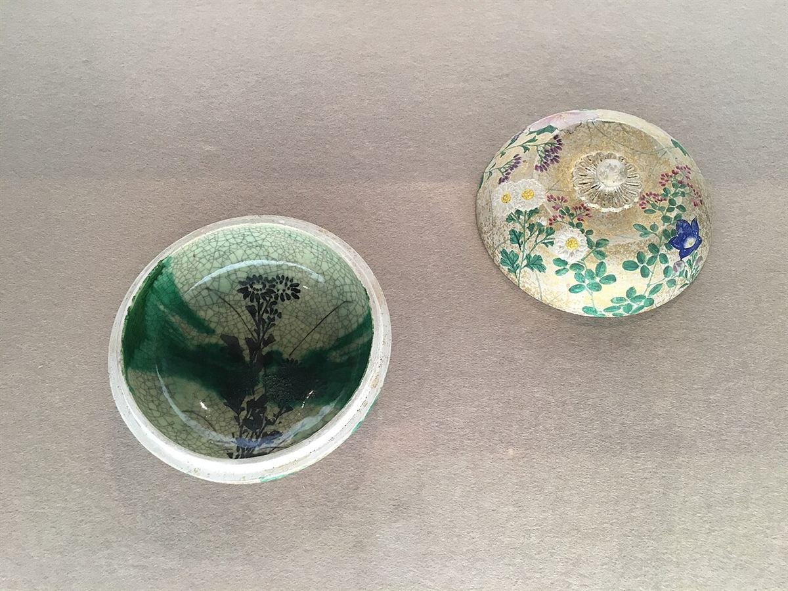

掲載している写真はフリー素材のイメージです。お店の実際の様子ではありません。他地域で撮影されたものや、撮影地が不明のものを含みます。
メニュー
メニューについて

メニューと価格は、準備中(お問い合わせください)です。
確認できていない内容を、推測で掲載することは控えています。
営業時間・定休日
準備中(お問い合わせください)
写真について

このページの写真はイメージです。商品を写したものではなく、お店の実際の様子でもありません。
掲載している写真はフリー素材のイメージです。お店の実際の様子ではありません。他地域で撮影されたものや、撮影地が不明のものを含みます。

メニューと価格は、準備中(お問い合わせください)です。
確認できていない内容を、推測で掲載することは控えています。
準備中(お問い合わせください)

このページの写真はイメージです。商品を写したものではなく、お店の実際の様子でもありません。